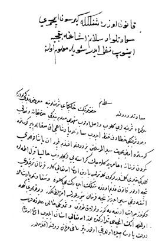

Belge 19: TKSA E.7002/49
Belge 19
Özet:
Kapudân paşa, gemi inşası için Kemer’e gitmiş, oradan ormanlardan kesilen kereste, tersanede gemilere yüklenmiş, Kızıl-Adalara varmış. Bugün yarın İstanbul’da olur, diyor.
Gemilerin gelişi dolayısıyla şenlik yapılmasını, çocuk pâdişahla vâlide seyre gitmek ister. Vâlideden veziriâzama bu konuda tezkire gitmiş. Vâlide çocuk pâdişahla, gelen gemilerin İstanbul limanına girişinde şenlik yapılsın mı diye soruyor.
Kullara ulûfe verilmesi tarihi yaklaşıyor, para temini Tanrı yardımıyla inşallâh kolay olur, diyor.
H. H. Turhan Sultan’ın emri:
“Kanûn üzere şenlikte girsün içeri, sa’âdetlü Arslanım (IV. Mehmed) aşağı bağçeye inüb nazar eder, şöyle ma’lûm oluna.”
Yorum:
Sultan Mehmed’in ilk kez saraydan av için çıkması Zilkade 1060 (16 Kasım 1650) tarihindedir.52Bahçe, Kâğıthane’de nehir kenarında Mîrahur Köşkü bahçesidir. Bostancıbaşı tavşan ve tilki koyuverip arkasından tazıları salmış. Küçük pâdişah seyretmiş. Belge tarihi 15 Kasım 1656 olmalı.
52 Nâimâ, V, s. 43-44.